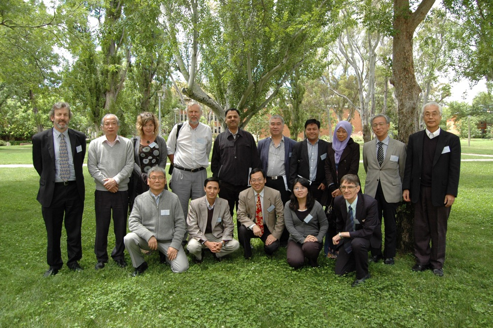
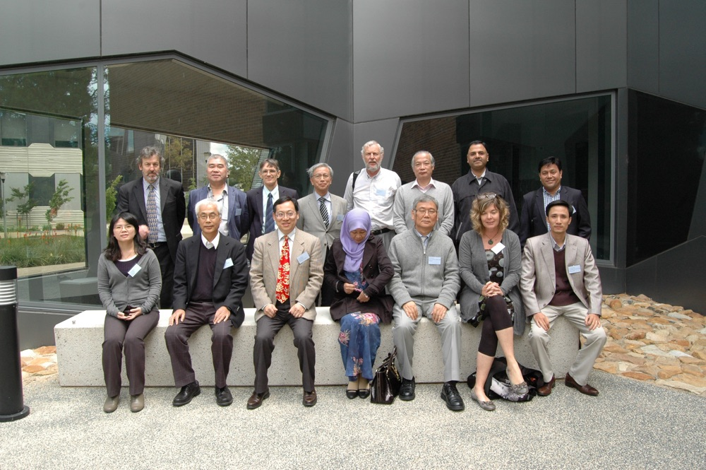

Meeting of the Asia Pacific Protein Association (APPA) Council
Minutes of the APPA Council Meeting
12:10-13:30, Sunday, November 15, 2015
Location
Australian Nation University, Canberra, Australia
Room 2.104 Executive Boar
http://science.anu.edu.au/whats-on/all-news/bonding-over-building-blocks-life
d Room of Building 138 Research School of Chemistry.
Chair
Prof. Zengyi Chang, Previous President of APPA, Peking University, China
Participants Present
Yuji Goto (past president), Zengyi Chang (past president), Ray Norton (Australia), Ru-Yu (Ruby) Chen (Chinese Taipei), Haruki Nakamura (Japan), Fumio Arisaka (Past council, Japan), Kyu-Hoon Han (Korea), Raja Noor Zaliha Raja Abd. Rahman (Malaysia), Juliet Gerrard (New Zealand), Lemmuel Tayo (The Philippines), Alex Law (Singapore), James Ketudat-Cairns (Thailand), Truong Quoc Phong (Vietnam), Rajan Sankaranarayanan (substitute for India), John Carver (ANU Host and observer), Damien Hall (ANU Host and observer)
Absent
Young Kee Kang (President), Richard Simpson (Australia), Feng Shao (China), Ming Lei (China), David Hsiao (Chinese Taipei), Mohan Rao (India), Dinakar Salunke (India), Arief Witaro (Indonesia), Bambang Sugiharto (Indonesia), Hiroki Shirai (Japan), Weontae Lee (Korea), Kurt Krause (New Zealand), Jianxing Song (Singapore), Jisnuson Svasti (Thailand), Phan Van Chi (Vietnam).
Meeting minutes
Zengyi Chang and Yuji Goto presided over the meeting in place of Young Kee Kang
- The meeting minutes from the previous Council meeting (JeJu Island, Korea) were formally approved (previously approved by email).
-
Discussion of addition of the post of Secretary General to the Bylaws.
- The position of Secretary General was approved.
- The role of the secretary general was discussed: to help the president, especially with communications inside and outside of the APPA.
- It was noted that the period of office should be the same as that of the president, who appoints the secretary general.
- It was approved that the President of the APPA should appoint the Secretary-General, who must be approved by Council (via email).
- It was recommended that the Secretary-General not be from the country to host the next meeting, since the Secretary-General and President-Elect would be too busy assisting with organization of the upcoming meeting to attend to general APPA business.
-
Assignment of the APPA meeting for 2017.
- Former President Zengyi Chang described the decision of the Protein Society (based in USA) not to hold the Protein Symposium in Shanghai in 2017, due to their desire to keep all financial aspects under their control (for further information, see previously circulated email and related document given at the meeting). The associated APPA meeting in Shanghai was therefore cancelled.
- The Protein Society of Thailand proposed to hold the 2017 APPA meeting in Thailand.
- Jisnuson Svasti previously wrote email to indicate the PST’s interest.
- James Ketudat-Cairns presented the background of the PST, its ability to hold a large meeting, based on previously holding the 2014 AOHUPO meeting, and tentative plans for the 2017 APPA Conference.
- The location of the 2017 meeting in Thailand was approved.
- Discussion of the location and session structure identified Bangkok and nearby beach resorts as possible venues and a consensus that approximately 2 parallel sessions was best to avoid splitting interests and empty sessions.
- It was noted that the APPA council members should act as active members of the Scientific Program Committee.
-
Dates to avoid in 2017:
- 16-20 July, the International Union of Biophysics meeting.
- 24-27 July, the Protein Society Protein Symposium
- The location of the 2020 APPA meeting was discussed with Malaysia, New Zealand, Japan, and Taiwan expressing interest and some speculation that Indonesia would also be interested, although they were not represented.
-
Discussion of the Protein Society Symposium in Asia.
- The Protein Society is welcome to have a Protein Symposium in Asia.
- The APPA Council cannot make a decision on whether APPA should be involved in such a Protein Society Symposium without further information from the Protein Society.
- The Protein Science Society of Japan (PSSJ) is planning to hold an APPA workshop in association with their annual meeting, which is 7-9 June, 2016.
- Other national societies are encouraged to similarly have APPA sessions or workshops at their meetings.
- Photographs of the APPA Council, the ANU hosts and associated guests were taken.
APPA Bylaws
- Article 1. Name
- The name of the association is Asia Pacific Protein Association (APPA in short).
- Article 2. Objectives
- The objectives of APPA are to promote protein research and education among Asia Pacific nations and regions.
- Article 3. Membership
- Membership in APPA shall be open to the Protein Communities in the Asia Pacific area. Application to join APPA shall be approved by more than half of the APPA Council members.
Article 4. Officers :: The Officers of APPA shall be President, Secretary General, President-Elect, and Past-President. The President represents and runs APPA. The Secretary General shall be nominated by the President and shall be approved by Council members. The Secretary General supports the President and informs all affairs concerning APPA to all Council members. The President-Elect shall be elected from the host organization to chair the upcoming APPA Symposium and approved by more than half of the Council members. At completion of APPA Symposium, the President-Elect will assume the position of President, and the President will become Past-President. The Past-President will serve until the completion of the next APPA Symposium.
- Article 5. APPA Council
- The APPA Council shall be composed of two representatives from each APPA member. Each APPA member shall have the right to assign its representatives. Each representative shall serve a term of no more than six years.
- Article 6. Activity
- The APPA will hold a Symposium once every three years and promote any other related programs.
- Article 7. Finance
- Each member shall be financially responsible for its own activities, including hosting the APPA Symposium.
- Article 8. APPA Office
- The Office of APPA shall be placed in the Office of the Protein Science Society of Japan (PSSJ).
- Article 9. Amendments
- Amendments may be proposed by individual members of the Council. Amendments must be approved by a two-thirds majority of the APPA Council members.
Group photos of APPA council meeting

